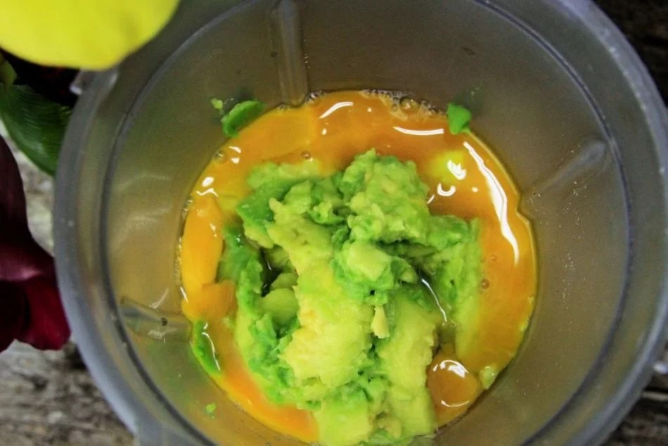
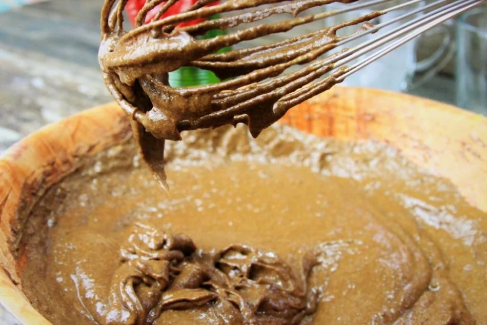
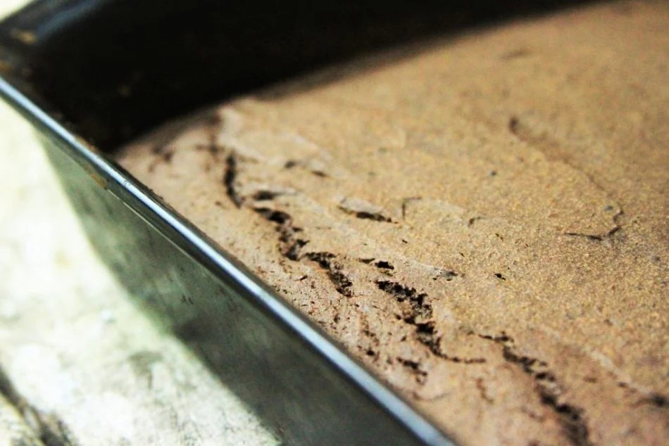
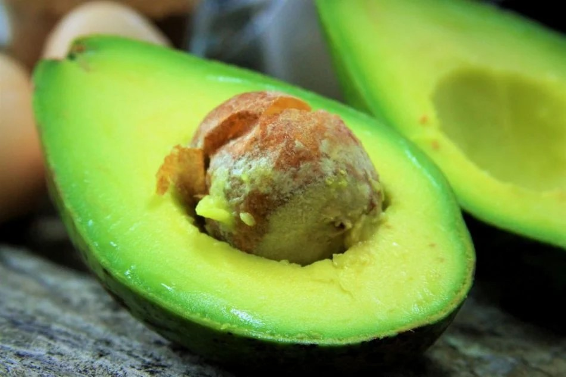
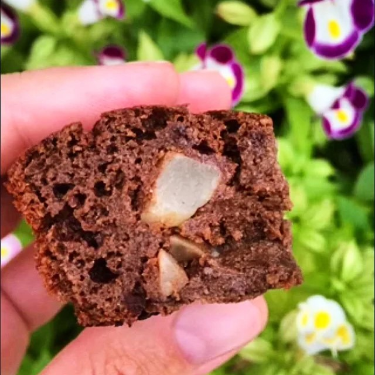
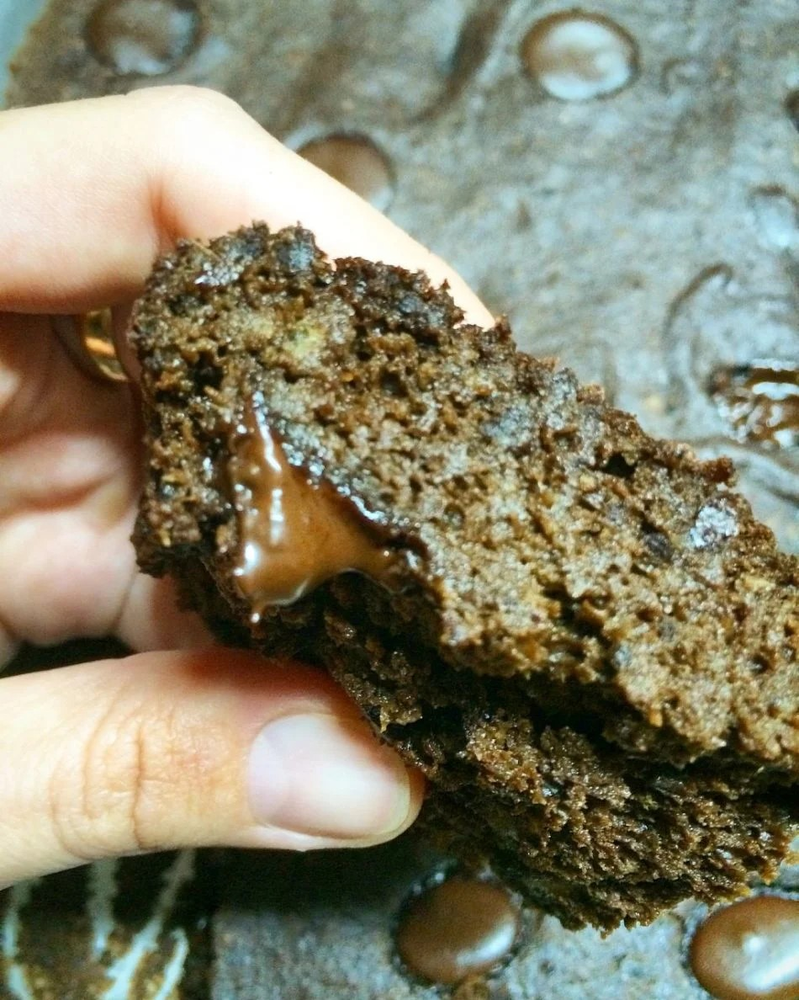
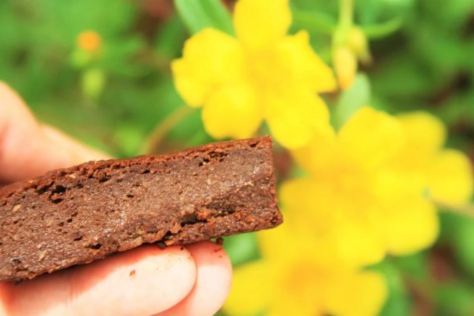

1 abacate pequeno maduro – use aproximadamente 1 xícara à 1 1/2 xícara (ATENÇÃO não pode estar preto e com linhas marrons por dentro da fruta se não pode ficar com gosto estranho)
1 banana branca bem madura
1/2 xícara de mel, melado ou agave
4 ovos caipiras
1/2 xícara de farinha de coco (se usar a farinha de coco industrializada use 3/4 xícara)
1/2 xícara de araruta ou polvilho doce
1/2 xícara de cacau em pó 100% ou use o chocolate em pó 50% caso não goste de sabores amargos (cheire e experimente pra verificar se o cacau não está velho, nem mofado e muito menos com bichinhos, isto pode fazer seu brownie ficar amargo)
1/4 colher de chá de sal
1 colher de chá de fermento em pó
1 colher de sobremesa de pimenta síria ou canela (opcional)
Esta receita além de ser super saudável é muito fácil de fazer, você só vai precisar de um liquidificador e um fuet ou uma colher de pau. São poucos ingredientes e todos fáceis de encontrar.
Coloque no liquidificador o abacate, a banana, o mel e os ovos.
Bata bem até que vire um creme homogêneo.
Transfira o creme de abacate para uma bacia e adicione a farinha de coco, a araruta, o cacau, o sal e mexa bem com o fuet ou misture vigorosamente com uma colher de pau.

Depois que todos os ingredientes estiverem incorporados finalize adicionando o fermento em pó.

Transfira a massa para uma forma (20 x 30 cm) untada e polvilhada com cacau em pó, use papel manteiga caso sua forma não seja antiaderente.
Leve para assar em forno pré-aquecido à 180º C por 25 minutos. Se preferir o brownie com mais consistência de bolo deixe assar por 35 minutos.

Assim que esfriar retire da forma, corte em 12 pedaços.
Consuma em até dois dias fora da geladeira ou mantenha refrigerado por até 5 dias.
Para esta receita o abacate precisa estar bem maduro, caso você queira usar e ele ainda não estiver no ponto, embrulhe-o em um saco e mantenha-o em lugar escuro de um dia pra outro, se ele ainda não estiver maduro deixei mais um dia.
Para escolher o abacate maduro procure pela coloração verde mais clara e aperte levemente para sentir se ele já está macio. Se estiver macio mas com muitas manchas marrom ele pode já estar passado.

Quando a banana estiver bem passada e já não for saborosa pra comer in natura ela fica extra doce e perfeita para usar em brownies, bolos e muffins.
Meça 1/2 xícara de cacau bem certinho para que não fique amargo, em uma das vezes que fiz a receita quis aproveitar que o pacote estava acabando e usei quase 2/3 xícara e ficou mais amargo do que eu gostaria.
Adicione 1/2 xícara de castanhas, nozes ou amendoim para uma crocância e sabor extra.

Se você estiver fazendo esta receita pra crianças use o chocolate em pó 50%, assim o sabor do chocolate fica mais suave e o brownie um pouco mais doce.
Pra deixar com sabor ainda mais intenso de chocolate você pode adicionar 1/2 xícara de chocolate amargo em gotas ou picado.

Você pode congelar este Brownie em um pote intercalando os pedaços com plástico. Para descongelar é só deixar que descongele na geladeira da noite para o dia seguinte.
